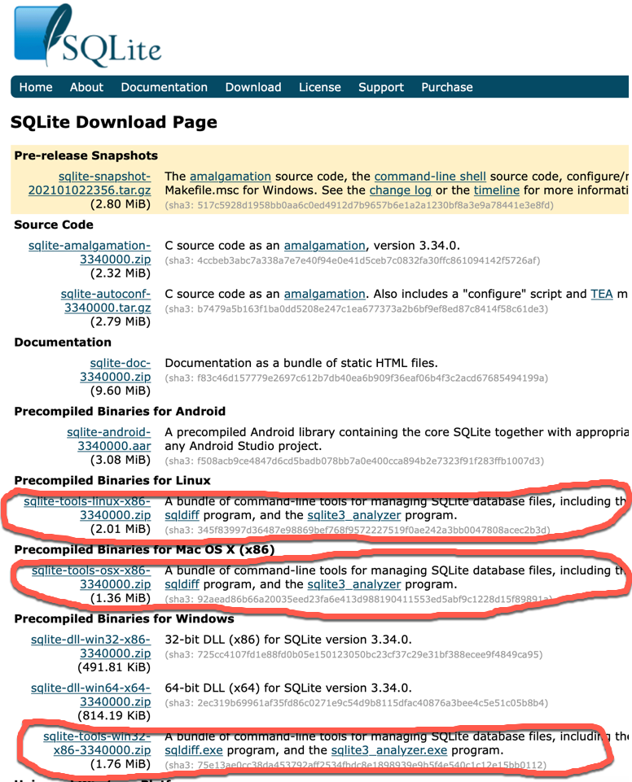

SQLite is a free server-less SQL database available from the following site: https://www.sqlite.org/download.html
SQLite installs and runs on Windows, MacOS, and Linux.
Here are some guidelines for installing. Please let me know if there are errors or updates I should be aware of.
You should download "sqlite-tools" Precompiled Binaries for your operation system (e.g. Windows, Linux, or Mac OS X). Read the instructions in the documentation section for your OS.

Execute sqlite3 as a command-line command to verify the installation:

Here is a quick screen capture video showing installation on my Windows 10 laptop.
MacOS comes with SQLite pre-installed so you should just be able to invoke it from a command terminal.
Here is a screen capture video of me using the precompiled binary of the sqlite3 command line tool on my Mac.
You can, if you prefer, build the sqlite application from source code as follows:
$tar xvfz sqlite-autoconf-3071502.tar.gz $cd sqlite-autoconf-3071502 $./configure --prefix=/usr/local $make $make install
Execute sqlite3 in command terminal to verify the installation:

Linux distributions have SQLite installed already. Again precompiled binaries are available on the sqlite download site.
Verify the installation by executing the following command in a command terminal
$sqlite3 SQLite version 3.7.15.2 2013-01-09 11:53:05 Enter ".help" for instructions Enter SQL statements terminated with a ";" sqlite>
If it is not installed you can build and install the application from source code as follows:
$tar xvfz sqlite-autoconf-3071502.tar.gz $cd sqlite-autoconf-3071502 $./configure --prefix = /usr/local $make $make install
Try some basic examples from the sqlite documentation page: https://www.sqlite.org/cli.html .
The application provides a command line shell from which you can create sql databases and run queries. You can also read sql commands from a file using the .read command (see the documentation) and we will use this to create an initial database.
Here is a simple session example from the documentation page
$ sqlite3 ex1
SQLite version 3.6.11
Enter ".help" for instructions
Enter SQL statements terminated with a ";"
sqlite> create table tbl1(one varchar(10), two smallint);
sqlite> insert into tbl1 values('hello!',10);
sqlite> insert into tbl1 values('goodbye', 20);
sqlite> select * from tbl1;
hello!|10
goodbye|20
sqlite> .exit
$
In the above example a database called ex1 will either be opened, or created if it does not already exist. In sqlite3 .commands (i.e. commands that start with a dot) are not SQL directives but rather special instructions for the sqlite3 shell. These dot commands do not end in a semicolon the way SQL commands do. You can see a list of all the available shell commands by execting .help. We tabulated some of the most useful commands here: sqlite_dot_commands.html
Here is how you could run the telephone_switch.sql script if
located in the same directory as your database. Note it
could take a few minutes to build the database. Once it's done you should use
.tables to see if the tables are there and then try the select * from one of the
tables as shown below.
c:\sqlite>sqlite3 example1 SQLite version 3.7.2 Enter ".help" for instructions Enter SQL statements terminated with a ";" sqlite> .read telephone_switch.sql sqlite> .tables calls services trunk_routes facilities subscribers trunks lines treatments service_subscribers trunk_channels sqlite> sqlite> .mode column sqlite> .header on sqlite> select * from subscribers; portid name address ---------- ----------- ------------ 1 Mats Sundin 45 Elgin St. 2 Jason Allis 46 Elgin St. 3 Eric Lindro 48 Elgin St. 4 Bryan MacCa 23 MacLeod S 5 Steve Nash 1129 Otterso 6 Michael Jor 1223 Carling 7 Roger Cleme 14 Hopewell ...